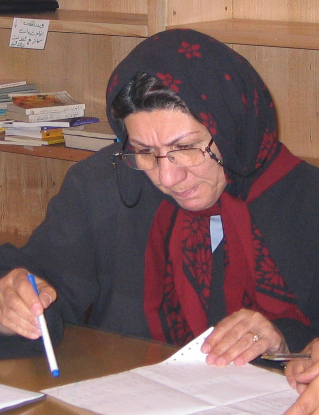

پذيرش > سایت نوشته ها > با تغيير و بازنگري قوانين ، درجهت حذف خشونت عليه زنان بکوشيم / طلعت تقي (...)


 با تغيير و بازنگري قوانين ، درجهت حذف خشونت عليه زنان بکوشيم / طلعت تقي نيا با تغيير و بازنگري قوانين ، درجهت حذف خشونت عليه زنان بکوشيم / طلعت تقي نيا
7 آذر 1385 - - نسخه قابل چاپ
شهرزاد نیوز: پس از گرد همايي هاي مکرر وپيگيرنهادهاي حقوق بشري، سازمانهاي زنان و مبارزات فعالان حقوق زنان ، 25 نوامبر ( 4 آذر ) ، به عنوان روز جهاني مبارزه با خشونت عليه زنان به مجمع سازمان ملل پشنهاد شد. مجمع عمومي سازمان ملل در 17 دسامبر 1999 اين روز را به عنوان روز جهاني مبارزه با خشونت عليه زنان پذيرفت. اعلام اين روز خود به معناي اذعان به وجود خشونت بر زنان در جهان است.
نهادهاي حقوق بشرِي، سازمان هاي حقوق زنان، منطقهاي و محلي، با برگزاري کنفرانسها، کارگاههاي آموزشي، چاپ و انتشار مقالات فمينيستي و تبليغات عمومي، به جلب توجه افکارعمومي براي پيشبرد راهکارهاي مبارزه با خشونت عليه زنان ميپردازند.
کوفي عنان ، دبير کل سازمان ملل به مناسبت روز بين الملي حذف خشونت عليه زنان گفت :« خشونت عليه زنان تفکري است که هنوزبسيار عادي وعميق است وخشونت برزنان را قابل قبول مي داند. خشونت عليه زنان گسترده است وزنان با تبعيض و نابرابري در حقوق و زندگي روز مره خود در جهان روبروهستند. »
نگاهي به عرصه هاي خشونت در ايران
قرن هاست ، خشونت هاي مستمر وقانون مند به صورت " سازمان يافته " فرصت هاي رسيدن به حقوق برابر را از زنان گرفته است و فرايند خشونت از آنان انسان هايي ناتوان و وابسته ساخته است .
خشونت اشکال مختلف و مرتبطي دارد ، ابزاريست براي حفظ موقعيت و تقويت فرمانبرداري زنان در جامعه مرد سالار ! ترس ناشي از خشونت و محدوديت در بهره وري از حقوق شهروندي آنها را از متن جامعه دور کرده و در حاشيه اجتماعي و اقتصادي جامعه قرار داده است ، زنان اغلب از دسترسي به بنياديترين حقوق بشر که شامل برابري در آموزش، مراقبتهاي بهداشتي، و امنيت اقتصادي محروم هستند که اين محروميت آنها را از دستيابي به کرامت انساني باز مي دارد.
زنان فاقد حقوق برابر در جامعه و خانه هستند. اين امر ميزان کنترل زنان بر بدنشان و قدرت تصميمگيري آنها را کاهش داده و آنان را بييشتر در مقابل خشونت جنسي ، آسيبپذير ميسازد.
شايع ترين و خاموش ترين خشونت ها در محيط بسته خانه ها اتفاق مي افتد ، آزارهاي رواني ، تحقير زنان ، حملات فيزيکي ، محروميت هاي اقتصادي و رفتار اقتدارگرايانه اي که بر زنان اعمال مي شود اعتماد به نفس و توانايي را از آنها سلب و تبديل به انسان هاي فرودست و ناتوان مي کند . از سوي ديگر مقاومت در برابر فرادستان در جامعه اي که قوانين و نهادهاي حمايتي براي زنان وجود ندارد بر تعداددختران فراري ونيز زنان به بن بست رسيده اي که تنها راه رهايي از خشونت و تحقير روزمره را تخريب خود مي دانند ، مي افزايد. از اين رو شايد يکي از دلايل افزايش خودسوزي هاي زنان در مناطقي از کشورمان که سنت و قانون دست به دست هم داده و شرايط زنان را بحراني ساخته اند، افزايش خشونت بر زنان و از طرف ديگر مخالفت زنان با شيوه هاي تحميلي اعمال شده از طرف جامعه مردسالار است.
فيلم « بماني» ساخته تاثير گذار داريوش مهرجويي ، تصويرهايي از اين خشونت ها و ناتواني زنان در مقابله با آن است. از طرف ديگر آنچه که خشونت گر مي خواهد از طريق اعمال خشونت به آن دست يابد از طرف اين زنان غير قابل تحمل است. اين زنان به مانند مادرانشان « نصيب و قسمت» خود را نمي پذيرند و در راستاي تغيير سرنوشت تحميلي خود هستند، اما در شرايطي که هيچ نهاد حمايتي براي اين زنان وجود ندارد و سنت و قانون آن ها را تابع مي خواهد، آنها چه مي کنند؟ اگر قادر به انتخاب شيوه زندگي خود نيستند، شيوه مرگ خود را انتخاب مي کنند.
افزايش پديده فرار دختران، افزايش فقر اقتصادي و بدنبال آن، شيوع آسيبهاي اجتماعي از جمله اعتياد و پديده «زنهاي خياباني» بشدت به شيوع ايدز دامن ميزند، و چنانچه گفته شد، دراين ميان بيدفاعترين قربانيان ايدز زنان هستند. در حاليکه هيچگونه نظارت و اقدام جدي براي کنترل اين بيماري و ارائه آموزشهاي همگاني صورت نگرفته است.
زناني که در کودکي به شوهر داده ميشوند ، زناني که دائم مورد تجاوز شوهرانشان قرار ميگيرند، بخاطر ساختار قدرت بين مرد و زن ( فرادست وفرودست ) در رابطه جنسي، نميتوانند در مورد شرايط برابر رابطه جنسي نظر دهند. زناني که توسط غريبهها و آشنايان مورد تجاوز قرار ميگيرند، امکان حمايت از خود در مقابل بيماريهاي فرد مهاجم را ندارند. شيوع بيماريهاي مقاربتي و ايدز ، بر دامنه مشکلات اين زنان به شکل گسترده اي مي افزايد.
آمار مربوط به ايدز در ايران دقيق نيست و همانند بيشتر کشورهاي درحال توسعه، به خاطر تابوهاي موجود درباره مسائل جنسي، آموزش جنسي کافي در اين زمينه به عموم داده نميشود. با ايجاد محدوديتهاي اجتماعي در روابط جنسي ميان دختران و پسران، شکل رابطه هرچه بيشتر بسوي پنهان کاري گرايش پيدا کرده و شکلهاي ناسالم رابطه به جاي روابط سالم رشد مييابد.
در قتل هاي ناموسي تحت عنوان «حفظ ناموس» خانواده ، زني را که تصور مي شود به ناموس خانواده لطمه زده است به قتل رسانده مي شود. اين قتل ها به اسم فرهنگ وسنت انجام مي شو د. از طرف ديگر در اين فرهنگ رفتارهاي جنسي مردان مورد مواخذه قرار نمي گيرد و در موارد بسياري ر فتار ولنگار جنسي مردان به عنوان نشان مردانگي آنان مورد ارزشيابي قرار مي گيرد.
در قوانين تامين اجتماعي ، زنان با وجود پرداخت برابر حق بيمه به مانند همکاران مردشان، نمي توانند بعد از مرگ آسايشي براي فرزندان خود فراهم کنند و فرزندان آنان نمي توانند از حقوق بازنشستگي و يا خدمات درماني مادر استفاده کنند. زنان حق برخورداري از شرايط کاري عادلانه ومطلوب ندارند : زماني که شوهر يک زن ميميرد، زن معمولا از حق داشتن زمين، اعتبار، و استفاده از شبکههاي توزيع محروم ميشوند.
در زمان هاي بيماري و بيکاري و فوت اغلب اين فرزند دختر خانواده است که از مدرسه بازميماند (به بويژه در روستاها) تا در مراقبت از افراد مريض خانواده کمک کند. اين امر به حقوق دختران براي آموزش لطمه ميزند و افزون برآن، چرخه نابرابري را که بطور فراگير وجوددارد، تقويت ميکند. اين فقدان آموزش، داراي تاثيرات عميق اقتصادي، اجتماعي و بهداشتي است که خود موجب ناتواني دختران مي شود.
زنانِ به حاشيه رانده شده، اغلب فاقد دسترسي به استاندارهاي حداقلي درمان پزشکي و تامين اجتماعي هستند. بزهکاران و زنان زنداني اکثرا از داشتن داروهاي لازم و معالجات پزشکي محروم هستند. بازماندگان تجاوز زير بار ننگ و ترس از قضا وت اجتماعي به ندرت بدنبال مراقبتهاي پزشکي ميروند.
کارگران جنسي در همه جاي جامعه مورد تبعيض قرار ميگيرند ، در نتيجه فقر و نا آگاهي وگراني بهاي داروها نمي توانند تحت درمان پزشکي قرار بگيرند. سياستگذاريهايي از اين دست، ننگ اجتماعي براي اين زنان را افزايش داده و آنان را به موقعيت فرودستتري در جامعه ميراند.
قوانين تبعيض آميز موجب خشونت است
قانون به مرد اجازه مي دهد هرگاه زنش را با مرد يگري ببيند زن را بکشد و از مجازات معاف باشد. 20 در صد قتل ها در کشورما را قتل هاي با انگيزه ناموسي و جنسي تشکيل مي دهد. تحقیقي در اين مورد نشان مي دهد 90 در صد مرداني که همسرانشان را کشته اند به دليل بدگماني و توهم بوده است. ( مرکز فرهنگی زنان )از طرف ديگر، امروز بيش از هر زمان ديگري برابري خواهي در جامه رواج يافته است. زنان قوانين تبعيض آميزي را که آنها را جنس دوم مي داند، به نقد وچالش کشيده اند : طبق قانون يک دختر در سن 9 سالگي مسئوليت کامل کيفري دارد و اگر مرتکب جرمي شود مجازات آن اعدام است، در 18 سالگي به اعدام سپرده مي شود. اگر زني در خيابان تصادف کند خسارتي که به زن مي دهند نصف خسارت مرد است. اگر حادثه اي جلوي چشم زن اتفاق بيافتد شهادت زن به تنهايي پذيرفته نمي شود. طبق قانون زن نمي تواند سرپرست مالي فرزندش شود در مورد خروج از کشور و محل زندگي و کار وطلاق تمي تواند تصميم بگيرد. اين قوانين تبعيض آميز و رنج آورباعث به وجود آمدن روابط نا سالم و پر از خشونت زن و مرد درخانه و جامعه گشته است.
اين موانع به ما مي آموزد : براي رفع تبغض ونابرابري که عامل خشونت در جامعه است از جمله به طرح جمع آوري "يک ميليون امضاء براي تغير قوانين تبعيض آميز" به پردازيم و به مسئولان نشان بدهيم زنان ومردان در ايران خواستار تغيير و باز نگري در قوانين تبعيض آميز هستند.
شهرزاد نيوز
ارسال به
بالاترین
،
توییتر
،
فریندفید
،
فیسبوک
در همين بخش :
 یک خبر تلخ؟ یک قانونشکنی؟ یک تصمیم بخشنامهای جدید؟ یک خبر تلخ؟ یک قانونشکنی؟ یک تصمیم بخشنامهای جدید؟
چرا بایست به سکسوالیته پرداخت؟ / نفیسه آزاد
آزارجنسی خانگی؛ «قربانی» نه، «نجات یافته»
زنان، بزرگترین بازندگان بهار عرب
سانسور از دیدگاه جنسیتی/الهه امانی
ديگر بخش ها :
طرح یک میلیون امضا
|
مقالات
|
سایت نوشته ها
|
اخبار
|
گزارش كمپين
|
گفت و گو
|
علیه سکوت
|
كوچه به كوچه
|
نامه های شما
|
گزارش ویژه
|
گفتگو با اعضا
|
ویژه سالگرد کمپین
|
تصویر برابری
|
دل آرام علی
|
تریبون
|
مقالات
|
تاریخ شفاهی
|
خارج از چارچوب
|
کتابخانه
|
درباره کمپین
|
کمپین در شهرها
|
کمپین در بند
|
صدای تغییر
|
ویژه 22 خرداد
|
لایحه حمایت از خانواده
|
گالری
|
عشا مومنی
|
امیر یعقوبعلی
|
خدیجه مقدم
|
راحله عسگری زاده و نسیم خسروی
|
پروین اردلان،جلوه جواهری، مریم حسین خواه، ناهید کشاورز
|
زینب پیغمبرزاده
|
سعیده امین، سارا ایمانیان، محبوبه حسین زاده، ناهید کشاورز و همایون نامی
|
احترام شادفر
|
نسیم سرابندی زاده،فاطمه دهدشتی
|
وبلاگ مهمان
|
پرونده خرم آباد
|
دستگیری ها
|
مریم مالک
|
پرستو اللهیاری
|
مهرنوش اعتمادی
|
سمیه رشیدی
|
Other Languages
|
همراهان
|
«فراخوان کمپین ده روز با بهاره هدایت»
| English
|